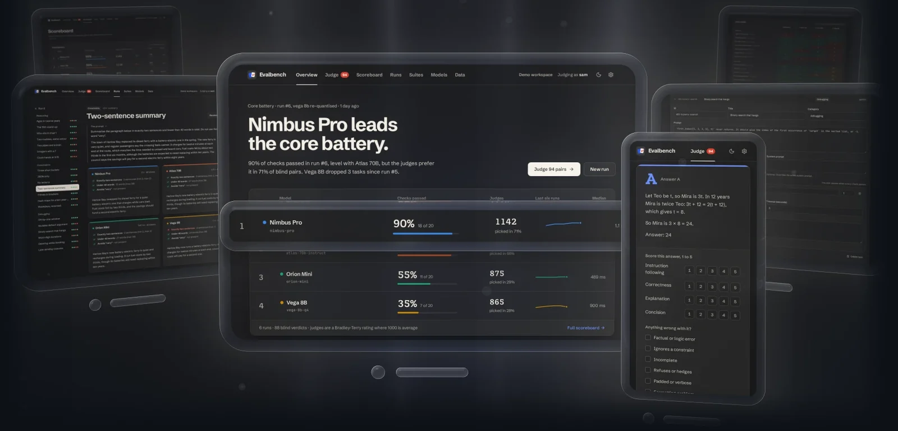

Open source · self-hosted
Evalbench
Write tasks and rubrics in YAML or in the browser, run them against local and API models, and grade every answer with automatic checks. People then rate pairs of answers blind, with nothing on screen that names either model. Ratings are fitted with a Bradley-Terry model and a bootstrap interval, and every run is frozen, so a regression shows the day it lands.
- 107 automated tests, plus sandbox checks in CI
- 7 check types, up to sandboxed Python tests
- 20 tasks in the core battery, graded automatically
- 0 API keys stored; read from the environment
Python · FastAPI · SQLite · React · TypeScript · Docker · Playwright